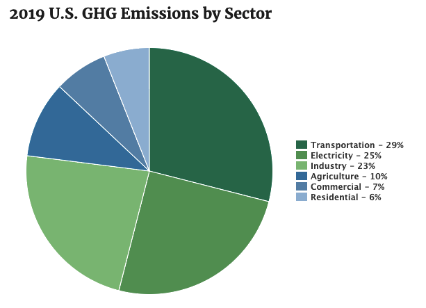
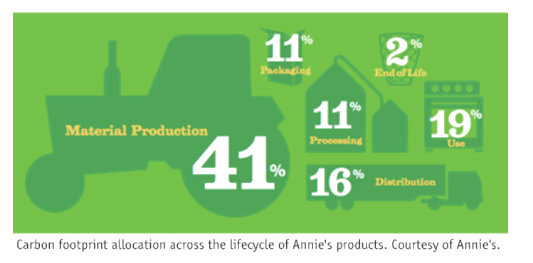

October 24, 2021 | 6 minute read
To Work on Climate Technology?
Motivation
Determine if a greater impact can be made by working on climate technologies than if working in other industries
Note: This post does not answer the above question...but hopefully it’s a start
How to measure impact? By how much the world’s quality of life improves.
Example:
In 1990, would an engineer in their 20’s have more impact in the computer industry or the oil and gas industry?
While the economy could not have grown like it did in this time period without cheap energy, impact was greater in tech. The rate of innovation was faster. From email and smartphones to ERP and ecommerce, this innovation accelerated efficiency and therefore growth in the world economy.
In 1990 there were 1.9 billion people living in extreme poverty. Today it’s under 650 million. That’s fewer deaths from preventable causes. Less hunger. Easier communication + travel to see loved ones. I believe this reduction signifies happier people and therefore a greater average quality of life. (Although we still have a long way to go). I believe tech had a greater impact towards this improvement in the world’s quality of life than any other field, despite the potential harms of social media and other side effects. Hindsight is 20/20. But if I was 55 now and in the oil industry, I’d regret not having attempted working in tech 30 years ago. In 2021, where will an engineer in their 20’s have the most impact?
One other note on impact - it’s the probability of impact.
By this measure, the well-run internet startups of the 1990s that failed still had impact because they helped lay the foundation for the technological improvements we have today. They may have “failed” due to reasons outside of their control. But they still had a nonzero probability of becoming “winners” in the eyes of society (and Wall Street). Other companies + projects that became massively successful in helping increase the world’s GDP did so in part by learning from these failures.
Assumptions
- The greenhouse effect is happening. The planet will be warmer in 2100 than it is now as a result
- Humans are contributing to this effect. Current atmospheric [CO2] is the highest it’s been in 2 million years as a result (IPCC)
- 50 billion annual tons of CO2 + equivalents (CO2E) are currently emitted (ourworldindata.org)
- The rate of global emissions is growing
- Without technological innovation, we cannot maintain and improve the world’s quality of life. While government policy is needed, it’s not the only solution
- You would enjoy working on climate technology. Attempting to work in a field you dislike wouldn’t be a good idea
How Bad Can it Get?
Scientists expect that if greenhouse gas levels double, warming will increase between 2.5˚C and 4˚C. This can and will lead to all sorts of effects by 2021 including:
- More extreme weather. Destructive disasters
- Sea levels rising to make regions unlivable and unworkable
- Increase in droughts make regions unlivable and unfarmable
This problem won’t ever go away. The world has finite carbon fuel reserves
There are also unknown-in-probability tipping points that could accelerate negative impacts to warming and drastically upend our quality of life:
- Thawing permafrost releasing huge quantities of CO2 and methane
- Ocean current patterns change or stop
- Rapid collapse of world’s rainforests
- Thawing permafrost releases plague-inducing microbes
- Rapid collapse of the marine ecosystem
- Massive rise in political unrest due to resource limitations (i.e. water, food, energy)
Current Solutions
Some of the highest-impact solutions currently available with policy and social changes:
- Plug leaky oil + gas facilities
- USA methane emissions in 2016 were 600k CO2E per year
- 55% of methane emissions at power plants are from fugitive equipment leaks (EPA). Note: it’s probably higher in other countries
- Indirect emissions from the oil + gas industry are estimated to be 5.2 billion globally (15% of the industry’s total emissions). (IEA)
- Plug all leaky facilities → 5.7% reduction
- 2016: 170 million tons CO2E from livestock farting (methane), 86 million tons CO2E from manure management (methane and nitrous oxide). 256 million tons total (EPA)
- Eat no meat → 5.2% reduction
- Note: actual reduction would be less as plant substitutes will still contribute to emissions (primarily fertilizer + transport)
- Transition cars + heating to electric:
- Transportation is 29% of USA emissions. Light-duty vehicles are 58% of that. Trucking is 24% (EPA)
- Electric vehicles contribute ⅓ the lifetime emissions of gas-powered (Forbes)
- Heating air + water in buildings contributes to 13% of USA emissions (EPA)
- Electric heat pumps for building+water heating contribute ⅓ the emissions of gas heating. (BBC)[a]
- Annual CO2E reductions possible:
- Convert all auto → 17% reduction
- Convert all trucking → 7% reduction
- Convert all auto + trucking → 24% reduction
- Convert all gas furnaces to heat pumps → 4% reduction
- Note: the actual reduction would probably be higher as higher electricity demand would result in more wind + solar projects
- Other currently-possible solutions:
- Recycle all food waste
- Plant more trees
- Improved insulation in all buildings
- Smart windows on buildings
- Build massive renewable-powered carbon sequestration plants
- More solar, wind, and hydro generation
- More nuclear
- Young people care about reducing emissions: These are the world’s current and future voters. They will also vote with their wallets. (Vox)
- Federal governments are beginning to care. “A spate of nations including China, Japan, and South Korea have set net-zero emissions targets — often for 2050 or beyond. Corporations, including Standard Chartered, have also made their own pledges” (Vox)
- More companies + investors are beginning to care. (Bloomberg)
Future Solutions
Technological innovation opportunities that can be worked on:[b]
- Cheaper carbon capture
- Convert captured carbon directly into new fuel (i.e. jet fuel) more-cheaply than it is to drill
- Hyperloop
- Autonomous vehicles - i.e. trucking convoys to reduce drag
- Cheaper wind power
- Cheaper solar (it’s already gone down 10x in cost since 2009)
- Solar powered roads
- Cheaper and better batteries
- Grid-level electricity storage that can economically last a full season
- Electrofuels - made from hydrogen
- Cheaper and cleaner biofuels
- Zero-carbon cement
- Zero-carbon steel
- Zero-carbon aluminum
- Artificial meat and dairy
- Zero-carbon fertilizer
- Safer and cleaner nuclear fission
- Nuclear-powered shipping
- Nuclear fusion
- Underground power transmission
- Zero-carbon plastics
- Cheaper geothermal energy
- Cheaper pumped hydro or pumped air
- Cheaper thermal storage (i.e. molten salt, other new materials)
- Cleaner coolants for refrigerators + heat pumps
Questions
- Why do experts think costs of carbon capture can be reduced by a factor of 3 or higher?
- Are there other technologies that seem to be on the cusp of breakthroughs similar to what solar has done in the past decade?
- Solutions to prevent the tragedy of the commons issue among different nations and paying for carbon capture?
- Philosophy: are the pursuit of economic growth and the improvement in human well-being mutually exclusive?
Carbon Capture Basics
- General principles: requires power, water, and filters
- Can be direct air capture, pre-combustion or post combustion
- Direct air capture: Pull in atmospheric air and extract the CO2 using filters/chemicals. Compress the CO2 into liquid
- Pre-combustion: Burn off the hydrogen, CO2 is compressed and stored
- Post-combustion: Filtration of burn exhaust. Filters include basalt, ultra-porous crystals, ammonia, limestone, bacteria, or algae. Procuring these filter materials can cause CO2 emissions. Then compress the CO2. Can be mounted to existing power facilities
- Why is it so hard to convert carbon back into fuel that can be used again?
- It sounds like it’s a lot more expensive than current ways we extract fossil fuels
- “The amount of energy required to capture and restore the carbon would likely (depending on what they are using to ‘capture’/solidify in) be similar in energy to the energy produced by freeing (burning) the carbon to begin with. If breaking a carbon off a chain produces 5 units of power, it would take 5 units of power to re-connect it to the chain. This power plant would produce zero power” (Reddit)
Some Numbers
- USA emissions breakdown (EPA)

- 2019: USA emitted 6.6 billion tons of CO2 equivalents (EPA). World emits 50 billion tons. We’re 13% of all emissions
- USA population 330 million. World population 8 billion. We’re 4.1% of all people
- Annie’s breakdown as a reference for the emissions of our consumer goods:

[a]There aren't good numbers on CO2E savings for electric heating. It's highly dependent on where you live and several other factors. Both Bill Gates' book (How to Avoid a Climate Disaster) and an article on it by the wsj gave no numbers.
[b]Many of these are ~carbon~ copied from Bill Gates' book.